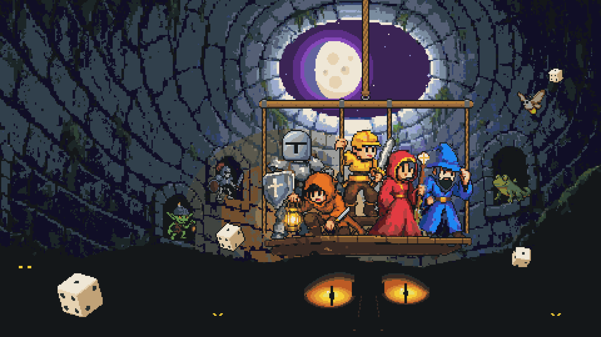
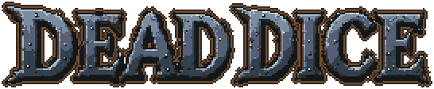
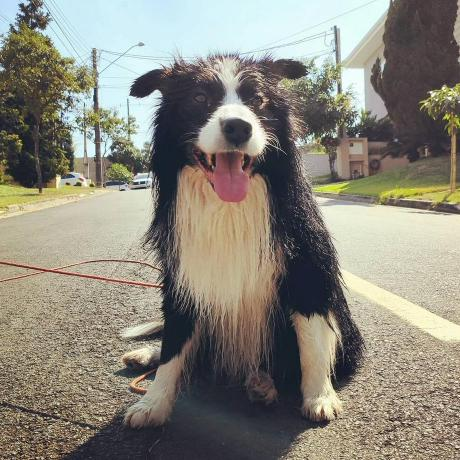
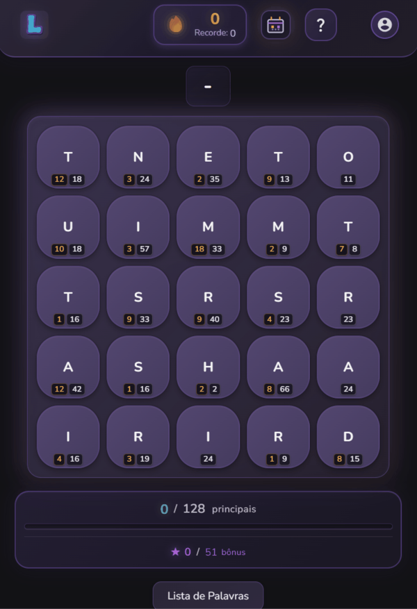

Hunting things and rolling down. A portrait pixel-art dice roguelike with extraction: village → expedition → extract or descend.

My name is Lucas, I am a computer engineer and hobbyist from Brazil, living in the silicon valley and working on GPU architecture at NVIDIA.
I am easy-going and enjoy working with diverse people and environments.
Chapter 1 · Day job
Senior GPU Architect with over 7 years of experience in system architecture for ASIC, GPU, and SoC devices for both graphics and AI/ML workloads.
Secure boot of NVIDIA GPUsBlackwell, Rubin, and next gens
Coordinating across many hardware, firmware, and software teams to deliver a secure initialization of the system, from power-up to SW.
Developing embedded solutions and hardware-software co-design projects for photonic devices.
With a specialization in Computer Architecture and Energy Efficiency.
One of the first RISC-V processors published from Brazil.
Chapter 2 · Studio
Hobbyist with several projects in GitHub exploring ML, LLM, optimization problems, games, full stack apps.


Hunting things and rolling down. A portrait pixel-art dice roguelike with extraction: village → expedition → extract or descend.

A daily word puzzle game where players find all hidden Portuguese words by dragging paths through adjacent letters.
Locations, crafted materials, and a sense of place sit at the heart of the experience. Now playable in a small, invitation-based closed beta.
Your AI coding assistant's long-term memory. Heimdall gives your LLM a persistent, growing, cognitive memory of your specific codebase, lessons and memories carry over time.
Leon3's 7-stage integer pipeline, changed from SPARC V8 to RISC-V RV32I
One of the first RISC-V processors published from Brazil. A modified version of the Leon3, a synthesisable VHDL model of a 32-bit processor.